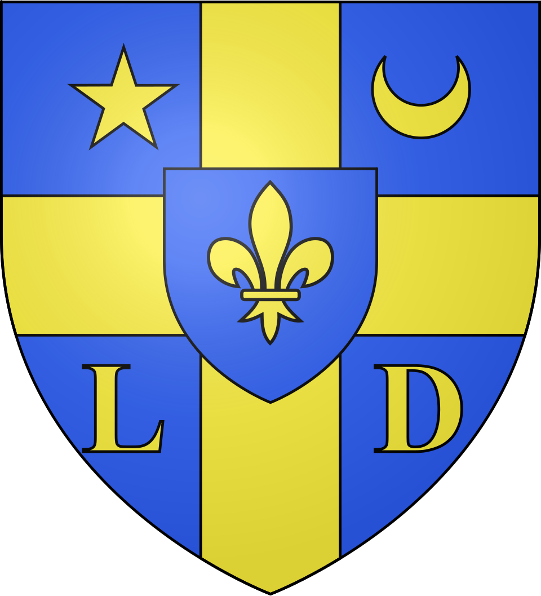
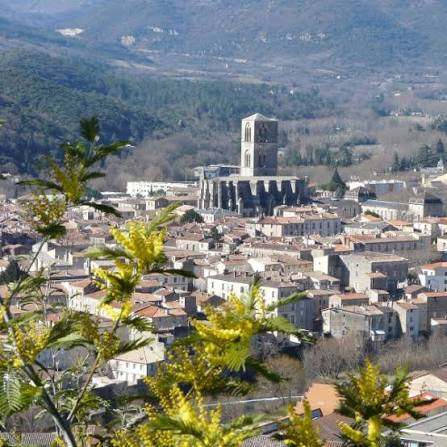
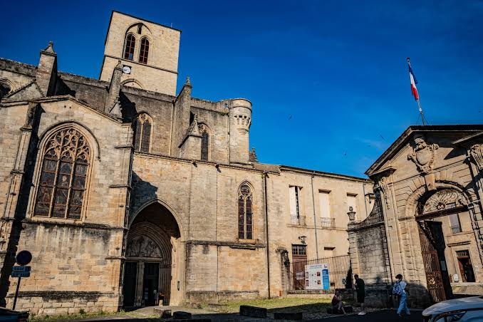

Lodève
Cité Épiscopale


⟹ Cathédrale · Drap · Larzac ⟸

De Luteva à la cité épiscopale. Située au confluent de la Lergue et de la Soulondre, sur un ancien axe entre Méditerranée et Massif central, Lodève est connue à l’époque gallo-romaine sous le nom de Luteva. Dès l’Antiquité tardive, elle devient siège épiscopal, fonction qui structure la ville pendant plus d’un millénaire.
Saint Fulcran et la ville médiévale. Au Xe siècle, l’évêque Fulcran devient l’une des grandes figures de Lodève. La cité épiscopale se développe autour de la cathédrale ; l’édifice gothique actuel est principalement construit entre les XIIIe et XVe siècles et son clocher d’environ 57 mètres domine encore la ville.

Une ville de commerce et de laine. Au Moyen Âge, Lodève profite des échanges entre les hautes terres et la plaine languedocienne. Élevage ovin, laine, cuir, céréales, vin et artisanat alimentent ses marchés. Malgré les troubles des guerres de Religion au XVIe siècle, le travail textile devient progressivement sa grande spécialité.
1726 : l’âge d’or du drap. Grâce à André-Hercule de Fleury, Lodévois devenu cardinal et principal ministre de Louis XV, la ville obtient en 1726 un privilège pour fournir les draps destinés aux troupes royales. Ateliers, manufactures et teintureries se multiplient ; au XIXe siècle, l’industrie textile atteint son apogée et façonne profondément la société et le paysage urbain.
Du déclin industriel à la Savonnerie. À partir de la seconde moitié du XIXe siècle, concurrence et mutations techniques fragilisent progressivement le textile. La dernière usine ferme en 1960. En 1964, un nouvel atelier de tissage est créé dans le contexte de l’accueil de familles de harkis rapatriées d’Algérie ; il devient ensuite l’unique annexe de la Manufacture nationale de la Savonnerie.

Paul Dardé et le renouveau culturel. Le sculpteur Paul Dardé (1888-1963), profondément attaché au Lodévois, laisse à la ville une œuvre majeure, notamment son Monument aux morts inauguré en 1930. Le Musée de Lodève conserve aujourd’hui le fonds de référence consacré à son travail.
Une identité entre pierre, laine et grands paysages. Cathédrale Saint-Fulcran, anciens quartiers de métiers, hôtels particuliers, Musée de Lodève et Manufacture de la Savonnerie témoignent des différentes vies de la cité. Lodève est aujourd’hui aussi une porte d’entrée vers le Larzac, le lac du Salagou et le Cirque de Navacelles.
Repères : Luteva gallo-romaine · Xe siècle, épiscopat de saint Fulcran · XIIIe-XVe siècles, cathédrale gothique · 1726, privilège des draps militaires · XIXe siècle, apogée textile · 1930, monument aux morts de Paul Dardé · 1960, fermeture de la dernière usine textile · 1964, naissance de l'atelier de la Savonnerie.
Chronologie synthétique de LodèvePour aller plus loin — sources et documentation :
• Office de tourisme Lodévois & Larzac — Lodève, histoire et patrimoine
• Office de tourisme — Cathédrale Saint-Fulcran
• Musée de Lodève — collections, archéologie et Paul Dardé
• Office de tourisme Lodévois & Larzac — Manufacture de la Savonnerie et territoire
• INSEE — données démographiques de Lodève
Saint Fulcran (Xe siècle), évêque de Lodève, demeure la grande figure spirituelle de la cité. Son épiscopat et son culte ont durablement marqué l'identité locale ; la cathédrale porte son nom et conserve le souvenir de ce personnage central de l'histoire médiévale lodévoise.
André-Hercule de Fleury (1653-1743), né à Lodève, devient cardinal puis principal ministre de Louis XV. Son intervention en faveur de sa ville natale est décisive : le privilège accordé en 1726 pour la fourniture des draps militaires ouvre l'âge d'or textile de Lodève.
Paul Dardé (1888-1963), né à Olmet près de Lodève, est l'une des personnalités artistiques majeures du territoire. Lauréat du Grand Prix national des arts en 1920, il choisit de revenir dans le Lodévois pour mener une œuvre libre, monumentale et profondément attachée à la pierre de son pays. Le Musée de Lodève conserve plusieurs centaines de sculptures et des milliers de dessins liés à son parcours.
La mémoire des ouvriers du textile constitue un autre pilier de l'identité locale. Pendant près de deux siècles, drapiers, fileuses, tisserands, teinturiers et ouvriers d'usine ont rythmé la vie de la cité. Cette histoire sociale se prolonge symboliquement aujourd'hui dans l'excellence du tissage de la Manufacture nationale de la Savonnerie.
Accès : Lodève se situe dans le nord-ouest de l'Hérault, sur l'axe de l'A75, à environ 55 km de Montpellier par la route. La ville constitue une porte d'entrée naturelle vers le Larzac et le nord du Cœur d'Hérault.
Office de tourisme : Office de Tourisme Lodévois & Larzac, 7 place du Rialto, 34700 Lodève. Il renseigne sur les visites guidées, le patrimoine, les randonnées, le lac du Salagou et le Cirque de Navacelles.
Musée de Lodève : 1 place Francis Morand. Le musée propose trois grands ensembles permanents consacrés aux sciences de la Terre, à l'archéologie/préhistoire et à Paul Dardé, ainsi que des expositions temporaires.
Manufacture de la Savonnerie : les visites permettent de découvrir le travail des lissiers et la fabrication de tapis d'exception. Les conditions de visite et périodes d'ouverture peuvent varier ; il est préférable de réserver ou de consulter l'office de tourisme.
À proximité : Lodève constitue un excellent point de départ pour rejoindre le lac du Salagou, le Cirque de Navacelles, les villages du Lodévois, les contreforts du Larzac et de nombreux itinéraires de randonnée.